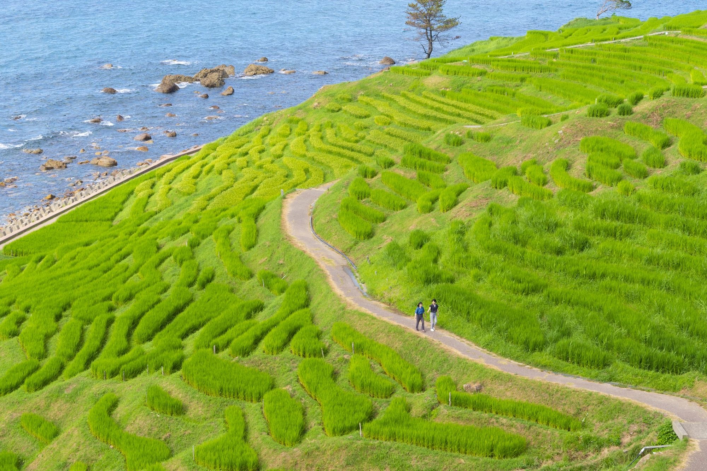
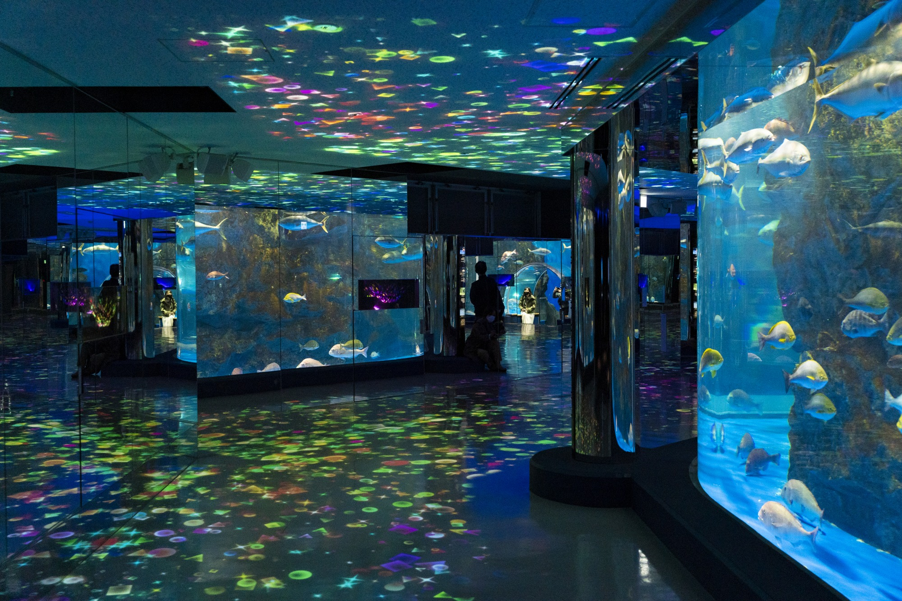
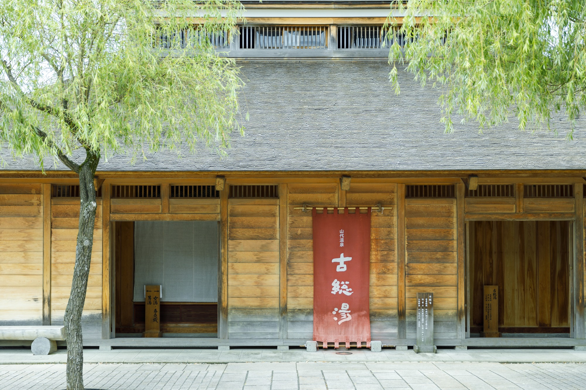
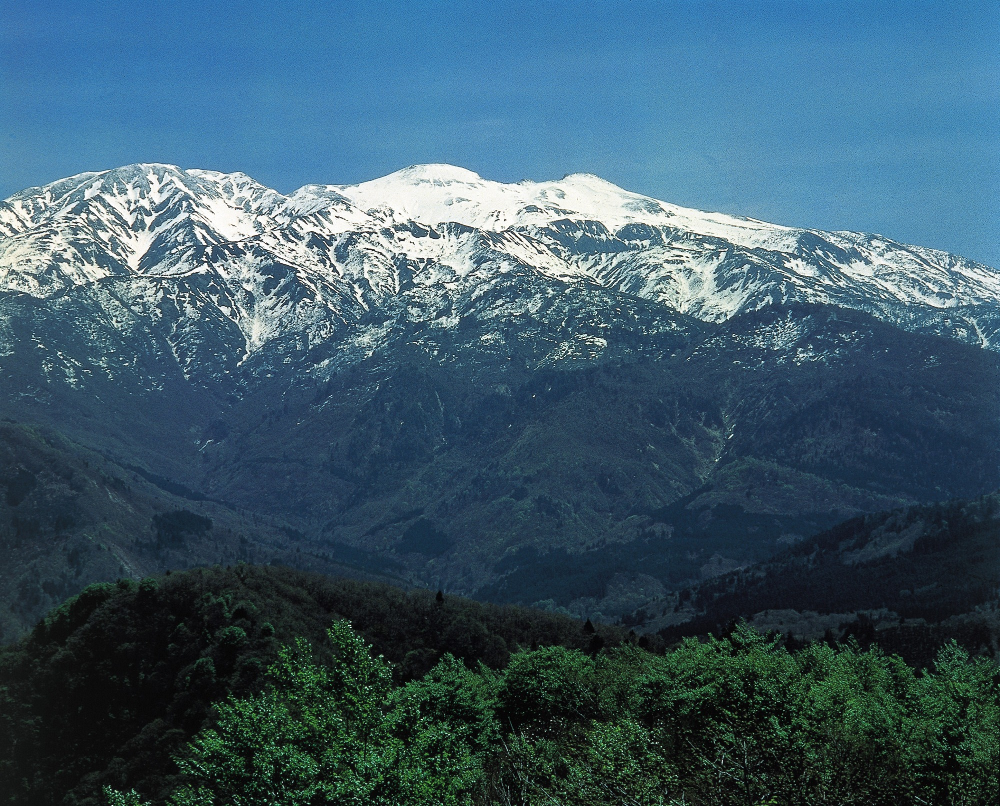

千枚田
千枚田は、輪島市の美しい棚田で、四季折々の風景が楽しめます。特に秋の稲刈りの時期には、黄金色の稲穂が一面に広がり、絶景です。
住所、お問い合わせ
住所: 〒920-0256 石川県輪島市白米町99-5 電話番号: 0768-23-1146 アクセス: JR金沢駅から車で約2時間30分 営業時間: 24時間開放

のとじま水族館
のとじま水族館は、能登半島に位置する水族館で、地元の海の生き物を中心に展示しています。特にイルカショーが人気です。
住所、お問い合わせ
住所: 〒926-0216 石川県七尾市能登島曲町15-40 電話番号: 0767-84-1271 アクセス: JR金沢駅から車で約1時間30分 営業時間: 9時00分～17時00分（季節により変動あり）

山代温泉
山代温泉は、加賀市にある歴史ある温泉地で、源泉かけ流しの温泉が楽しめます。宿泊施設も充実しており、ゆったりとした時間を過ごせます。
住所、お問い合わせ
住所: 〒922-0242 石川県加賀市山代温泉 電話番号: 0761-77-1234 アクセス: JR金沢駅から車で約30分 営業時間: 各宿泊施設により異なる

白山
白山は、石川県と岐阜県にまたがる美しい山で、登山やハイキングが楽しめます。特に夏の新緑や秋の紅葉が絶景です。また、日本三大名山の一つと呼ばれています。
住所、お問い合わせ
住所: 〒920-2501 石川県白山市白山 電話番号: 076-273-1001（白山観光協会） アクセス: JR金沢駅から車で約1時間30分 営業時間: 具体的な時間はないが、日没2時間前までがベスト